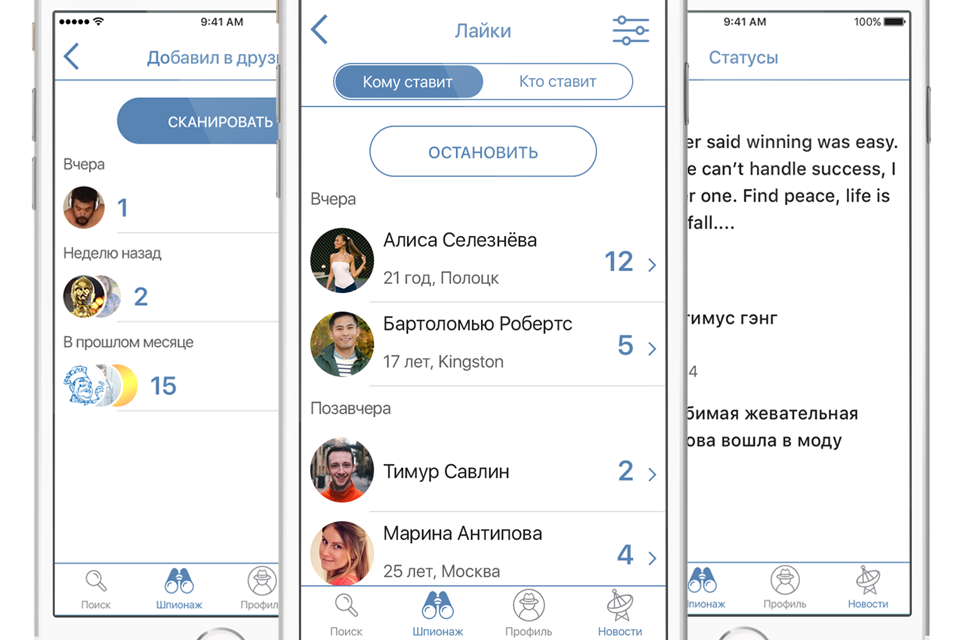
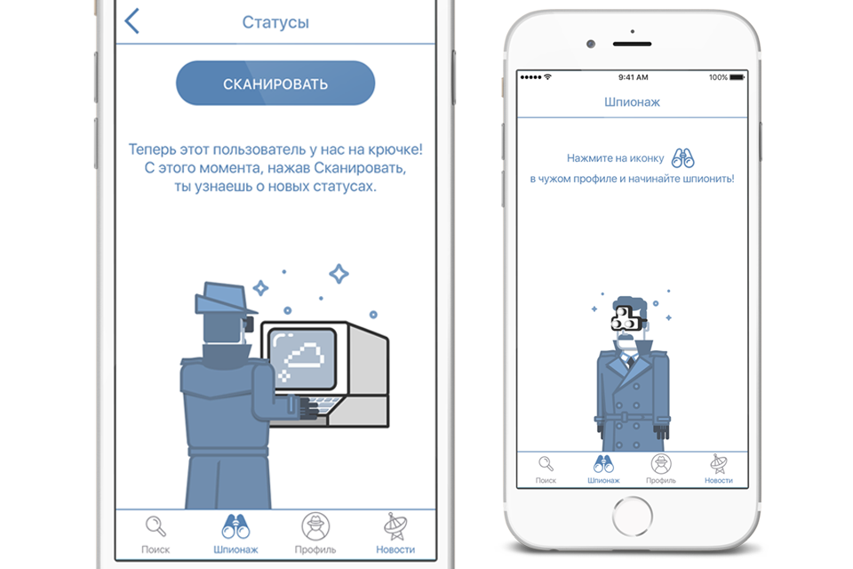

Selected works
Развлёк нерешительных пользователей Вконтакте
Агент VK iOS, 2016
Это развлекательное приложение позволяет смотреть информацию о пользователе добавляя его в друзья.
Получение некоторой информации занимает много времени, некоторая информация доступна после определенного действия. Я сделал так, что это не мешает плавному пользовательскому опыту.
Информация очень разная, и было важно добиться консистентности. И приложение должно было оставаться развлекательным и простым.
Все “empty states” сделаны с иллюстрациями, для создания еще более приятного опыта взаимодействия. Иллюстрации функциональны и помогают пользователю разобраться с вероятно непонятным моментом.
Самое важное было сделать так, чтобы на каждом этапе взаимодействия пользователь испытывал как можно меньше затруднений в достяжении цели (получении информации). А если по каким-то причинам затруднений избежать не удается, я старался снизить когнитивную нагрузку.